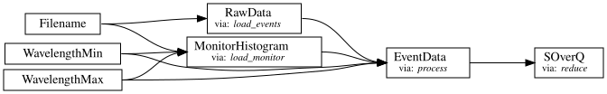
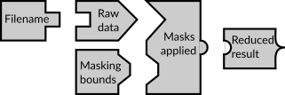
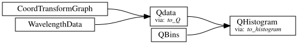
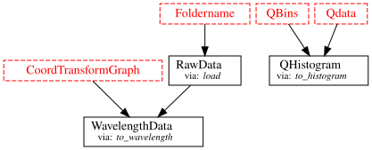
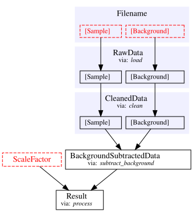

Introduction to Sciline#
Data processing workflow management tool.
scipp.github.io/sciline/
Sciline is an open-source library developed by ESS for managing and visualizing data processing workflows (sometimes called “pipelines”).
It defines workflows as directed acyclic graphs (DAGs) where the nodes are inputs, intermediate results, or final results, and edges are dependencies between the nodes.
This has some benefits:
Any (named) intermediate result in the pipeline can be computed.
The dependencies between intermediate results can be visualized.
Implementations of intermediate result can be replaced.
Results that are expensive to compute can be cached.
Certainty that the computed result has not been corrupted by running jupyter cells out of order.
Terminology#
A Sciline workflow (or “pipeline”) is defined by a set of transformations or providers that specify what inputs are needed to compute one specific output quantity.
The input and output quantities of the providers are called domain types.
A provider is a python function with type annotations:
# Example provider
def load_run(
run_number: RunNumber,
proposal_number: ProposalNumber,
data_dir_path: DataPath,
) -> LoadedNexusData:
filename = f'{proposal_number}_{run_number:06d}.hdf'
path = os.path.join(data_dir_path, filename)
with snx.File(path) as f:
data = f[()]
return data
In the above example, to compute the LoadedNexusData quantity the RunNumber, ProposalNumber and the DataPath quantities are needed.
LoadedNexusData, RunNumber, ProposalNumber and DataPath are “domain types”.
The domain types are the nodes in the workflow graph, and they represent the inputs, intermediate results, or final results of the workflow.
Inputs, intermediate results, and final results#
A typical data reduction workflow has some “Inputs”, some “Intermediate results” and some “Final results”.
Sciline does not distinguish between those, but it is useful to make a loose distinction:
Inputs are typically:
The name of one or more NeXus files.
Parameters defining a region of interest (ROI),
for example the wavelength range.
The number of histogram bins.
Intermediate results are typically:
List of events with associated coordinates, masks, and weights.
“Coordinates” such as wavelength, scattering angle, etc.
Monitor wavelength histogram.
Various calibration factors that are computed or loaded from file.
Final results are typically:
Curve describing the scattering cross section \(S(Q)\) as a function of momentum transfer (SANS).
List of peaks and associated intensities (diffraction).
Etc.

How does Sciline know how to build the graph?#
Each domain type is unique, and given a list of all functions to be used in the workflow, Sciline can figure out how to connect the nodes in the graph.
Think of it like puzzle pieces that fit into each other:
{kind=link}
{kind=link}

Example#
Creating a pipeline#
import os
from typing import NewType
import sciline as sl
import scipp as sc
from scippneutron.conversion.graph.beamline import beamline
from scippneutron.conversion.graph.tof import elastic
import sans_utils as utils
# Start by defining the domain types
# - quantities representing input parameters, intermediate results and the final results of the pipeline.
Foldername = NewType("Foldername", str)
"""Folder name for measurements."""
RawData = NewType("RawData", sc.DataArray)
"""Raw loaded data."""
CoordTransformGraph = NewType("CoordTransformGraph", dict)
"""Graph describing coordinate transformations."""
WavelengthData = NewType("WavelengthData", sc.DataArray)
"""Data with wavelength coordinate."""
QData = NewType("Qdata", sc.DataArray)
"""Data with Q coordinate."""
QBins = NewType("QBins", sc.Variable)
QHistogram = NewType("QHistogram", sc.DataArray)
"""Data histogrammed in Q bins."""
def load(folder: Foldername) -> RawData:
"""Load raw data from file"""
return utils.load_sans(folder)
def to_wavelength(
data: RawData, graph: CoordTransformGraph
) -> WavelengthData:
"""Compute wavelength for events"""
return data.transform_coords("wavelength", graph=graph)
def to_Q(data: WavelengthData, graph: CoordTransformGraph) -> QData:
"""Compute Q for events"""
return data.transform_coords("Q", graph=graph)
def to_histogram(events: QData, qbins: QBins) -> QHistogram:
"""Histogram data in Q bins"""
return events.hist(Q=qbins)
graph = {**beamline(scatter=True), **elastic("tof")}
workflow = sl.Pipeline(
# List the providers that make up the workflow.
(load, to_wavelength, to_Q, to_histogram),
# Optionally, assign values to domain types.
params={CoordTransformGraph: graph}
)
workflow.visualize(graph_attr={'rankdir': 'LR'})
Some domain types are visualized in red color and with dashed border, those are the domain types that lack a definition.
workflow
| Name | Value | Source |
|---|---|---|
| CoordTransformGraph |
{'incident_beam': &l...{'incident_beam': <function straight_incident_beam at 0x7f95a5aef740>, 'scattered_beam': <function straight_scattered_beam at 0x7f95a5aef7e0>, 'L1': <function L1 at 0x7f95c01684a0>, 'L2': <function L2 at 0x7f95c0168900>, 'two_theta': <function two_theta at 0x7f95a5aef9c0>, 'Ltotal': <function total_beam_length at 0x7f95a5aef880>, 'dspacing': <function dspacing_from_tof at 0x7f95a5b04860>, 'energy': <function energy_from_tof at 0x7f95a5b049a0>, 'hkl_vec': <function hkl_vec_from_elastic_Q_vec at 0x7f95a5b05300>, ('h', 'k', 'l'): <function hkl_elements_from_hkl_vec at 0x7f95a5b053a0>, 'ub_matrix': <function ub_matrix_from_u_and_b at 0x7f95a5b05260>, 'Q': <function elastic_Q_from_wavelength at 0x7f95a5b04ea0>, 'Q_vec': <function elastic_Q_vec_from_Q_elements at 0x7f95a5b051c0>, ('Qx', 'Qy', 'Qz'): <function elastic_Q_elements_from_wavelength at 0x7f95a5b04fe0>, 'wavelength': <function wavelength_from_tof at 0x7f95a5b047c0>, 'time_at_sample': <function time_at_sample_from_tof at 0x7f95a5b05440>} |
|
| Foldername | ||
| QBins | ||
| QHistogram |
to_histogram__main__.to_histogram | |
| Qdata |
to_Q__main__.to_Q | |
| RawData |
load__main__.load | |
| WavelengthData |
to_wavelength__main__.to_wavelength |
Setting parameters#
workflow[QBins] = sc.linspace("Q", 5.0e-3, 0.19, 201, unit="1/angstrom")
workflow[Foldername] = utils.fetch_data("3-mcstas/SANS_with_sample_many_neutrons")
workflow
| Name | Value | Source |
|---|---|---|
| CoordTransformGraph |
{'incident_beam': &l...{'incident_beam': <function straight_incident_beam at 0x7f95a5aef740>, 'scattered_beam': <function straight_scattered_beam at 0x7f95a5aef7e0>, 'L1': <function L1 at 0x7f95c01684a0>, 'L2': <function L2 at 0x7f95c0168900>, 'two_theta': <function two_theta at 0x7f95a5aef9c0>, 'Ltotal': <function total_beam_length at 0x7f95a5aef880>, 'dspacing': <function dspacing_from_tof at 0x7f95a5b04860>, 'energy': <function energy_from_tof at 0x7f95a5b049a0>, 'hkl_vec': <function hkl_vec_from_elastic_Q_vec at 0x7f95a5b05300>, ('h', 'k', 'l'): <function hkl_elements_from_hkl_vec at 0x7f95a5b053a0>, 'ub_matrix': <function ub_matrix_from_u_and_b at 0x7f95a5b05260>, 'Q': <function elastic_Q_from_wavelength at 0x7f95a5b04ea0>, 'Q_vec': <function elastic_Q_vec_from_Q_elements at 0x7f95a5b051c0>, ('Qx', 'Qy', 'Qz'): <function elastic_Q_elements_from_wavelength at 0x7f95a5b04fe0>, 'wavelength': <function wavelength_from_tof at 0x7f95a5b047c0>, 'time_at_sample': <function time_at_sample_from_tof at 0x7f95a5b05440>} |
|
| Foldername |
/home/runner/.cache/dmsc_schoo.../home/runner/.cache/dmsc_school/3-mcstas/SANS_with_sample_many_neutrons.zip.unzip/SANS_with_sample_many_neutrons |
|
| QBins |
<scipp.Variable> (Q: 201...<scipp.Variable> (Q: 201) float64 [1/Å] [0.005, 0.005925, ..., 0.189075, 0.19] |
|
| QHistogram |
to_histogram__main__.to_histogram | |
| Qdata |
to_Q__main__.to_Q | |
| RawData |
load__main__.load | |
| WavelengthData |
to_wavelength__main__.to_wavelength |
workflow.visualize(graph_attr={'rankdir': 'LR'})
Computing quantities#
q_hist = workflow.compute(QHistogram)
q_hist
- Q: 200
- L1()float64m150.0
Values:
array(150.) - Q(Q [bin-edge])float641/Å0.005, 0.006, ..., 0.189, 0.19
Values:
array([0.005 , 0.005925, 0.00685 , 0.007775, 0.0087 , 0.009625, 0.01055 , 0.011475, 0.0124 , 0.013325, 0.01425 , 0.015175, 0.0161 , 0.017025, 0.01795 , 0.018875, 0.0198 , 0.020725, 0.02165 , 0.022575, 0.0235 , 0.024425, 0.02535 , 0.026275, 0.0272 , 0.028125, 0.02905 , 0.029975, 0.0309 , 0.031825, 0.03275 , 0.033675, 0.0346 , 0.035525, 0.03645 , 0.037375, 0.0383 , 0.039225, 0.04015 , 0.041075, 0.042 , 0.042925, 0.04385 , 0.044775, 0.0457 , 0.046625, 0.04755 , 0.048475, 0.0494 , 0.050325, 0.05125 , 0.052175, 0.0531 , 0.054025, 0.05495 , 0.055875, 0.0568 , 0.057725, 0.05865 , 0.059575, 0.0605 , 0.061425, 0.06235 , 0.063275, 0.0642 , 0.065125, 0.06605 , 0.066975, 0.0679 , 0.068825, 0.06975 , 0.070675, 0.0716 , 0.072525, 0.07345 , 0.074375, 0.0753 , 0.076225, 0.07715 , 0.078075, 0.079 , 0.079925, 0.08085 , 0.081775, 0.0827 , 0.083625, 0.08455 , 0.085475, 0.0864 , 0.087325, 0.08825 , 0.089175, 0.0901 , 0.091025, 0.09195 , 0.092875, 0.0938 , 0.094725, 0.09565 , 0.096575, 0.0975 , 0.098425, 0.09935 , 0.100275, 0.1012 , 0.102125, 0.10305 , 0.103975, 0.1049 , 0.105825, 0.10675 , 0.107675, 0.1086 , 0.109525, 0.11045 , 0.111375, 0.1123 , 0.113225, 0.11415 , 0.115075, 0.116 , 0.116925, 0.11785 , 0.118775, 0.1197 , 0.120625, 0.12155 , 0.122475, 0.1234 , 0.124325, 0.12525 , 0.126175, 0.1271 , 0.128025, 0.12895 , 0.129875, 0.1308 , 0.131725, 0.13265 , 0.133575, 0.1345 , 0.135425, 0.13635 , 0.137275, 0.1382 , 0.139125, 0.14005 , 0.140975, 0.1419 , 0.142825, 0.14375 , 0.144675, 0.1456 , 0.146525, 0.14745 , 0.148375, 0.1493 , 0.150225, 0.15115 , 0.152075, 0.153 , 0.153925, 0.15485 , 0.155775, 0.1567 , 0.157625, 0.15855 , 0.159475, 0.1604 , 0.161325, 0.16225 , 0.163175, 0.1641 , 0.165025, 0.16595 , 0.166875, 0.1678 , 0.168725, 0.16965 , 0.170575, 0.1715 , 0.172425, 0.17335 , 0.174275, 0.1752 , 0.176125, 0.17705 , 0.177975, 0.1789 , 0.179825, 0.18075 , 0.181675, 0.1826 , 0.183525, 0.18445 , 0.185375, 0.1863 , 0.187225, 0.18815 , 0.189075, 0.19 ]) - incident_beam()vector3m[ 0. 0. 150.]
Values:
array([ 0., 0., 150.]) - sample_position()vector3m[0. 0. 0.]
Values:
array([0., 0., 0.]) - source_position()vector3m[ 0. 0. -150.]
Values:
array([ 0., 0., -150.])
- (Q)float64counts2729.742, 4071.837, ..., 0.419, 0.045σ = 34.391, 47.398, ..., 0.109, 0.009
Values:
array([2.72974237e+03, 4.07183737e+03, 3.96718862e+03, 3.89124955e+03, 3.80164008e+03, 3.67807453e+03, 3.52326835e+03, 3.29514884e+03, 3.19940041e+03, 3.14971520e+03, 3.02506958e+03, 2.88396277e+03, 2.66118161e+03, 2.53163776e+03, 2.41394262e+03, 2.28977330e+03, 2.07685305e+03, 1.90423830e+03, 1.74687194e+03, 1.59168108e+03, 1.25564850e+03, 1.23361572e+03, 8.66285997e+02, 6.64304129e+02, 4.92014333e+02, 3.50413467e+02, 2.46102338e+02, 2.24153320e+02, 2.23885961e+02, 2.41489418e+02, 2.34410810e+02, 2.34401477e+02, 2.35054661e+02, 2.57658721e+02, 2.27001704e+02, 1.88015026e+02, 1.91104457e+02, 1.50309728e+02, 1.27540925e+02, 9.63903329e+01, 7.57636628e+01, 5.26868469e+01, 4.56785359e+01, 3.63682838e+01, 2.75738161e+01, 2.40292114e+01, 1.99115255e+01, 1.87975614e+01, 1.86958807e+01, 1.93381493e+01, 2.25731544e+01, 2.46014136e+01, 2.73478862e+01, 2.93031758e+01, 3.54386011e+01, 3.35298376e+01, 3.57868767e+01, 4.09468027e+01, 4.12233726e+01, 4.43668216e+01, 4.83627729e+01, 4.45983845e+01, 4.33080569e+01, 4.52745987e+01, 4.25102072e+01, 5.14532314e+01, 4.91291670e+01, 4.27051313e+01, 4.50136805e+01, 4.46079086e+01, 4.08642003e+01, 3.72661482e+01, 3.64436504e+01, 3.07974096e+01, 3.12425553e+01, 3.24481799e+01, 2.73734421e+01, 2.07840466e+01, 2.04611163e+01, 1.77629617e+01, 1.71598671e+01, 1.61730021e+01, 1.54056295e+01, 1.60936218e+01, 1.72087609e+01, 1.72829356e+01, 1.64599511e+01, 1.56396260e+01, 1.41352107e+01, 1.52486599e+01, 1.26459880e+01, 1.72002262e+01, 1.96248626e+01, 1.95014437e+01, 2.15019178e+01, 2.33989080e+01, 2.12985070e+01, 2.02094407e+01, 1.82456888e+01, 1.87728922e+01, 2.21676136e+01, 1.86479519e+01, 2.02860477e+01, 1.89767586e+01, 2.12063640e+01, 1.95735834e+01, 1.67284563e+01, 2.03220247e+01, 2.12473696e+01, 1.82170720e+01, 2.13471395e+01, 1.97899398e+01, 1.73949648e+01, 1.90921897e+01, 1.94319163e+01, 2.16560924e+01, 1.56146377e+01, 1.93097118e+01, 1.62392677e+01, 1.57373741e+01, 1.47462106e+01, 1.44770307e+01, 1.62958929e+01, 1.31343524e+01, 1.61244496e+01, 1.46280003e+01, 1.54331607e+01, 1.76933309e+01, 1.42260521e+01, 1.76359505e+01, 1.62185435e+01, 1.87482984e+01, 1.69934900e+01, 1.52698921e+01, 2.01045034e+01, 1.67727863e+01, 1.80520741e+01, 1.53005178e+01, 1.44254374e+01, 1.82446745e+01, 1.65682690e+01, 1.76288355e+01, 1.67338403e+01, 1.76189905e+01, 1.76716326e+01, 1.62512102e+01, 1.67895223e+01, 1.59882241e+01, 1.38324827e+01, 1.61281895e+01, 1.77625320e+01, 1.43177435e+01, 1.67516638e+01, 1.63389229e+01, 1.22747926e+01, 1.65744057e+01, 1.66453507e+01, 1.34394404e+01, 1.40480306e+01, 1.26103516e+01, 1.47370521e+01, 1.21776273e+01, 1.38911794e+01, 1.13118770e+01, 1.50950800e+01, 1.38275507e+01, 1.50275579e+01, 9.90839680e+00, 1.27541005e+01, 1.04657295e+01, 1.19202924e+01, 9.63832937e+00, 8.10519543e+00, 1.34445223e+01, 7.62032281e+00, 1.09081873e+01, 8.11793570e+00, 9.55968791e+00, 8.14524996e+00, 5.62046109e+00, 5.79273670e+00, 3.36388006e+00, 5.39154324e+00, 7.58935094e+00, 5.58888833e+00, 4.74662947e+00, 3.81061128e+00, 3.61654794e+00, 1.90361561e+00, 2.51216284e+00, 3.14619206e+00, 2.43321616e+00, 1.84364324e+00, 2.18131726e+00, 2.29937419e+00, 8.86200299e-01, 6.29927477e-01, 9.59958138e-01, 4.18974267e-01, 4.49784109e-02])
Variances (σ²):
array([1.18271398e+03, 2.24653215e+03, 2.46084166e+03, 2.79182223e+03, 3.09952887e+03, 3.31877065e+03, 3.51882590e+03, 3.59403563e+03, 3.75781306e+03, 4.04016715e+03, 4.11267226e+03, 4.18763665e+03, 4.02835918e+03, 4.05608684e+03, 3.97283204e+03, 3.89081401e+03, 3.63714227e+03, 3.31024572e+03, 3.06771829e+03, 2.83638514e+03, 2.21630998e+03, 2.21163413e+03, 1.52307222e+03, 1.18372863e+03, 8.42743550e+02, 5.54786047e+02, 3.78140024e+02, 3.03288752e+02, 2.73362684e+02, 2.75115324e+02, 2.32848446e+02, 2.15537958e+02, 2.02997760e+02, 2.21348223e+02, 1.65479271e+02, 1.18559698e+02, 1.07344519e+02, 7.25307374e+01, 5.53554268e+01, 3.48654614e+01, 2.20806521e+01, 1.12541900e+01, 7.31032941e+00, 5.20821442e+00, 2.51578299e+00, 1.59168074e+00, 1.01966399e+00, 8.82987846e-01, 8.91356117e-01, 9.76224321e-01, 1.50818201e+00, 2.16213326e+00, 2.77885994e+00, 3.52570526e+00, 4.94367841e+00, 5.15720149e+00, 6.08935046e+00, 8.12890686e+00, 8.78204707e+00, 1.03662293e+01, 1.22875058e+01, 1.11308471e+01, 1.12497290e+01, 1.24956310e+01, 1.13812596e+01, 1.49255128e+01, 1.38528178e+01, 1.17695279e+01, 1.19924762e+01, 1.17785174e+01, 1.05544479e+01, 8.51503502e+00, 8.07147524e+00, 6.59274761e+00, 6.17571123e+00, 5.69738777e+00, 4.36398533e+00, 2.54988992e+00, 2.36489865e+00, 1.86559300e+00, 1.59092941e+00, 1.36204807e+00, 1.23700995e+00, 1.18313671e+00, 1.41835544e+00, 1.38261825e+00, 1.26313591e+00, 1.25407807e+00, 1.10099065e+00, 1.29733502e+00, 9.61136179e-01, 1.80042379e+00, 2.43496597e+00, 2.28335302e+00, 3.05830193e+00, 3.67323058e+00, 3.26989597e+00, 2.89874215e+00, 2.58100203e+00, 2.80342317e+00, 4.24362124e+00, 3.22345334e+00, 3.37656574e+00, 3.35354269e+00, 4.20717560e+00, 3.60569547e+00, 2.68471570e+00, 3.81498121e+00, 3.78752077e+00, 2.96070362e+00, 3.82596399e+00, 3.53559968e+00, 2.73560388e+00, 3.49427464e+00, 3.37176452e+00, 3.51293740e+00, 1.97872010e+00, 2.98374734e+00, 2.29583807e+00, 2.12812835e+00, 1.87254291e+00, 1.87276497e+00, 2.50256119e+00, 1.64982894e+00, 2.16344780e+00, 1.90462291e+00, 2.18859465e+00, 2.86167717e+00, 1.97154177e+00, 2.86399908e+00, 2.84008017e+00, 3.88298704e+00, 3.19124591e+00, 2.63138049e+00, 4.45093976e+00, 3.01209448e+00, 3.89027915e+00, 2.90446887e+00, 2.29931033e+00, 3.81563643e+00, 3.16687774e+00, 3.94335436e+00, 3.79874552e+00, 3.68594159e+00, 3.80204361e+00, 3.61146024e+00, 3.87689978e+00, 3.29053836e+00, 2.50156703e+00, 3.63331258e+00, 4.07330062e+00, 2.73145030e+00, 3.64998974e+00, 3.37505994e+00, 2.35182951e+00, 3.76885476e+00, 3.59748223e+00, 2.42305683e+00, 2.91431476e+00, 2.35170548e+00, 3.02067399e+00, 2.39314553e+00, 3.42808108e+00, 2.09231475e+00, 3.33518745e+00, 3.86758277e+00, 4.08337887e+00, 1.90938956e+00, 3.57754955e+00, 2.79315012e+00, 3.54709219e+00, 2.77823483e+00, 1.90722948e+00, 4.70525479e+00, 1.99488574e+00, 3.92706755e+00, 2.18118845e+00, 3.57502354e+00, 2.76842468e+00, 1.68984068e+00, 1.46577780e+00, 1.90809285e-01, 1.43027543e+00, 2.63476367e+00, 1.88706709e+00, 1.62644365e+00, 1.24291962e+00, 8.03869571e-01, 3.15189630e-02, 4.63543706e-01, 1.32232211e+00, 5.06878141e-01, 5.33925402e-01, 6.59093547e-01, 8.92936421e-01, 1.73273164e-02, 1.14405438e-02, 3.31029083e-01, 1.17812501e-02, 7.99953070e-05])
wavelength_data = workflow.compute(WavelengthData)
wavelength_data
- event: 21698488
- L1()float64m150.0
Values:
array(150.) - L2(event)float64m3.013, 3.012, ..., 3.005, 3.005
Values:
array([3.01317307, 3.01247634, 3.01251313, ..., 3.00541293, 3.00534931, 3.00538394], shape=(21698488,)) - Ltotal(event)float64m153.013, 153.012, ..., 153.005, 153.005
Values:
array([153.01317307, 153.01247634, 153.01251313, ..., 153.00541293, 153.00534931, 153.00538394], shape=(21698488,)) - incident_beam()vector3m[ 0. 0. 150.]
Values:
array([ 0., 0., 150.]) - position(event)vector3m[0. 0.28144614 3. ], [0. 0.27388628 3. ], ..., [0. 0.17923303 3. ], [0. 0.17981275 3. ]
Values:
array([[0. , 0.28144614, 3. ], [0. , 0.27388628, 3. ], [0. , 0.27429062, 3. ], ..., [0. , 0.18029663, 3. ], [0. , 0.17923303, 3. ], [0. , 0.17981275, 3. ]], shape=(21698488, 3)) - sample_position()vector3m[0. 0. 0.]
Values:
array([0., 0., 0.]) - scattered_beam(event)vector3m[0. 0.28144614 3. ], [0. 0.27388628 3. ], ..., [0. 0.17923303 3. ], [0. 0.17981275 3. ]
Values:
array([[0. , 0.28144614, 3. ], [0. , 0.27388628, 3. ], [0. , 0.27429062, 3. ], ..., [0. , 0.18029663, 3. ], [0. , 0.17923303, 3. ], [0. , 0.17981275, 3. ]], shape=(21698488, 3)) - source_position()vector3m[ 0. 0. -150.]
Values:
array([ 0., 0., -150.]) - tof(event)float64ms251.226, 251.239, ..., 233.352, 233.356
Values:
array([251.22550766, 251.23940373, 251.24018643, ..., 233.34365168, 233.35173882, 233.35641044], shape=(21698488,)) - wavelength(event)float64Å6.495, 6.496, ..., 6.033, 6.034
Values:
array([6.49523588, 6.49562473, 6.4956434 , ..., 6.03322068, 6.03343228, 6.03355171], shape=(21698488,)) - x(event)float64m0.0, 0.0, ..., 0.0, 0.0
Values:
array([0., 0., 0., ..., 0., 0., 0.], shape=(21698488,)) - y(event)float64m0.281, 0.274, ..., 0.179, 0.180
Values:
array([0.28144614, 0.27388628, 0.27429062, ..., 0.18029663, 0.17923303, 0.17981275], shape=(21698488,))
- (event)float64counts1.126e-11, 9.608e-16, ..., 1.223e-90, 1.131e-94σ = 1.126e-11, 9.608e-16, ..., 1.223e-90, 1.131e-94
Values:
array([1.12600052e-11, 9.60753256e-16, 8.19757010e-20, ..., 1.32191179e-86, 1.22278950e-90, 1.13109979e-94], shape=(21698488,))
Variances (σ²):
array([1.26787717e-022, 9.23046820e-031, 6.72001556e-039, ..., 1.74745078e-172, 1.49521415e-180, 1.27938674e-188], shape=(21698488,))
two_results = workflow.compute((WavelengthData, QHistogram))
two_results
{__main__.WavelengthData: <scipp.DataArray>
Dimensions: Sizes[event:21698488, ]
Coordinates:
L1 float64 [m] () 150
L2 float64 [m] (event) [3.01317, 3.01248, ..., 3.00535, 3.00538]
Ltotal float64 [m] (event) [153.013, 153.012, ..., 153.005, 153.005]
incident_beam vector3 [m] () (0, 0, 150)
position vector3 [m] (event) [(0, 0.281446, 3), (0, 0.273886, 3), ..., (0, 0.179233, 3), (0, 0.179813, 3)]
sample_position vector3 [m] () (0, 0, 0)
scattered_beam vector3 [m] (event) [(0, 0.281446, 3), (0, 0.273886, 3), ..., (0, 0.179233, 3), (0, 0.179813, 3)]
source_position vector3 [m] () (0, 0, -150)
tof float64 [ms] (event) [251.226, 251.239, ..., 233.352, 233.356]
* wavelength float64 [Å] (event) [6.49524, 6.49562, ..., 6.03343, 6.03355]
* x float64 [m] (event) [0, 0, ..., 0, 0]
* y float64 [m] (event) [0.281446, 0.273886, ..., 0.179233, 0.179813]
Data:
float64 [counts] (event) [1.126e-11, 9.60753e-16, ..., 1.22279e-90, 1.1311e-94] [1.26788e-22, 9.23047e-31, ..., 1.49521e-180, 1.27939e-188]
,
__main__.QHistogram: <scipp.DataArray>
Dimensions: Sizes[Q:200, ]
Coordinates:
L1 float64 [m] () 150
* Q float64 [1/Å] (Q [bin-edge]) [0.005, 0.005925, ..., 0.189075, 0.19]
incident_beam vector3 [m] () (0, 0, 150)
sample_position vector3 [m] () (0, 0, 0)
source_position vector3 [m] () (0, 0, -150)
Data:
float64 [counts] (Q) [2729.74, 4071.84, ..., 0.418974, 0.0449784] [1182.71, 2246.53, ..., 0.0117813, 7.99953e-05]
}
two_results[QHistogram]
- Q: 200
- L1()float64m150.0
Values:
array(150.) - Q(Q [bin-edge])float641/Å0.005, 0.006, ..., 0.189, 0.19
Values:
array([0.005 , 0.005925, 0.00685 , 0.007775, 0.0087 , 0.009625, 0.01055 , 0.011475, 0.0124 , 0.013325, 0.01425 , 0.015175, 0.0161 , 0.017025, 0.01795 , 0.018875, 0.0198 , 0.020725, 0.02165 , 0.022575, 0.0235 , 0.024425, 0.02535 , 0.026275, 0.0272 , 0.028125, 0.02905 , 0.029975, 0.0309 , 0.031825, 0.03275 , 0.033675, 0.0346 , 0.035525, 0.03645 , 0.037375, 0.0383 , 0.039225, 0.04015 , 0.041075, 0.042 , 0.042925, 0.04385 , 0.044775, 0.0457 , 0.046625, 0.04755 , 0.048475, 0.0494 , 0.050325, 0.05125 , 0.052175, 0.0531 , 0.054025, 0.05495 , 0.055875, 0.0568 , 0.057725, 0.05865 , 0.059575, 0.0605 , 0.061425, 0.06235 , 0.063275, 0.0642 , 0.065125, 0.06605 , 0.066975, 0.0679 , 0.068825, 0.06975 , 0.070675, 0.0716 , 0.072525, 0.07345 , 0.074375, 0.0753 , 0.076225, 0.07715 , 0.078075, 0.079 , 0.079925, 0.08085 , 0.081775, 0.0827 , 0.083625, 0.08455 , 0.085475, 0.0864 , 0.087325, 0.08825 , 0.089175, 0.0901 , 0.091025, 0.09195 , 0.092875, 0.0938 , 0.094725, 0.09565 , 0.096575, 0.0975 , 0.098425, 0.09935 , 0.100275, 0.1012 , 0.102125, 0.10305 , 0.103975, 0.1049 , 0.105825, 0.10675 , 0.107675, 0.1086 , 0.109525, 0.11045 , 0.111375, 0.1123 , 0.113225, 0.11415 , 0.115075, 0.116 , 0.116925, 0.11785 , 0.118775, 0.1197 , 0.120625, 0.12155 , 0.122475, 0.1234 , 0.124325, 0.12525 , 0.126175, 0.1271 , 0.128025, 0.12895 , 0.129875, 0.1308 , 0.131725, 0.13265 , 0.133575, 0.1345 , 0.135425, 0.13635 , 0.137275, 0.1382 , 0.139125, 0.14005 , 0.140975, 0.1419 , 0.142825, 0.14375 , 0.144675, 0.1456 , 0.146525, 0.14745 , 0.148375, 0.1493 , 0.150225, 0.15115 , 0.152075, 0.153 , 0.153925, 0.15485 , 0.155775, 0.1567 , 0.157625, 0.15855 , 0.159475, 0.1604 , 0.161325, 0.16225 , 0.163175, 0.1641 , 0.165025, 0.16595 , 0.166875, 0.1678 , 0.168725, 0.16965 , 0.170575, 0.1715 , 0.172425, 0.17335 , 0.174275, 0.1752 , 0.176125, 0.17705 , 0.177975, 0.1789 , 0.179825, 0.18075 , 0.181675, 0.1826 , 0.183525, 0.18445 , 0.185375, 0.1863 , 0.187225, 0.18815 , 0.189075, 0.19 ]) - incident_beam()vector3m[ 0. 0. 150.]
Values:
array([ 0., 0., 150.]) - sample_position()vector3m[0. 0. 0.]
Values:
array([0., 0., 0.]) - source_position()vector3m[ 0. 0. -150.]
Values:
array([ 0., 0., -150.])
- (Q)float64counts2729.742, 4071.837, ..., 0.419, 0.045σ = 34.391, 47.398, ..., 0.109, 0.009
Values:
array([2.72974237e+03, 4.07183737e+03, 3.96718862e+03, 3.89124955e+03, 3.80164008e+03, 3.67807453e+03, 3.52326835e+03, 3.29514884e+03, 3.19940041e+03, 3.14971520e+03, 3.02506958e+03, 2.88396277e+03, 2.66118161e+03, 2.53163776e+03, 2.41394262e+03, 2.28977330e+03, 2.07685305e+03, 1.90423830e+03, 1.74687194e+03, 1.59168108e+03, 1.25564850e+03, 1.23361572e+03, 8.66285997e+02, 6.64304129e+02, 4.92014333e+02, 3.50413467e+02, 2.46102338e+02, 2.24153320e+02, 2.23885961e+02, 2.41489418e+02, 2.34410810e+02, 2.34401477e+02, 2.35054661e+02, 2.57658721e+02, 2.27001704e+02, 1.88015026e+02, 1.91104457e+02, 1.50309728e+02, 1.27540925e+02, 9.63903329e+01, 7.57636628e+01, 5.26868469e+01, 4.56785359e+01, 3.63682838e+01, 2.75738161e+01, 2.40292114e+01, 1.99115255e+01, 1.87975614e+01, 1.86958807e+01, 1.93381493e+01, 2.25731544e+01, 2.46014136e+01, 2.73478862e+01, 2.93031758e+01, 3.54386011e+01, 3.35298376e+01, 3.57868767e+01, 4.09468027e+01, 4.12233726e+01, 4.43668216e+01, 4.83627729e+01, 4.45983845e+01, 4.33080569e+01, 4.52745987e+01, 4.25102072e+01, 5.14532314e+01, 4.91291670e+01, 4.27051313e+01, 4.50136805e+01, 4.46079086e+01, 4.08642003e+01, 3.72661482e+01, 3.64436504e+01, 3.07974096e+01, 3.12425553e+01, 3.24481799e+01, 2.73734421e+01, 2.07840466e+01, 2.04611163e+01, 1.77629617e+01, 1.71598671e+01, 1.61730021e+01, 1.54056295e+01, 1.60936218e+01, 1.72087609e+01, 1.72829356e+01, 1.64599511e+01, 1.56396260e+01, 1.41352107e+01, 1.52486599e+01, 1.26459880e+01, 1.72002262e+01, 1.96248626e+01, 1.95014437e+01, 2.15019178e+01, 2.33989080e+01, 2.12985070e+01, 2.02094407e+01, 1.82456888e+01, 1.87728922e+01, 2.21676136e+01, 1.86479519e+01, 2.02860477e+01, 1.89767586e+01, 2.12063640e+01, 1.95735834e+01, 1.67284563e+01, 2.03220247e+01, 2.12473696e+01, 1.82170720e+01, 2.13471395e+01, 1.97899398e+01, 1.73949648e+01, 1.90921897e+01, 1.94319163e+01, 2.16560924e+01, 1.56146377e+01, 1.93097118e+01, 1.62392677e+01, 1.57373741e+01, 1.47462106e+01, 1.44770307e+01, 1.62958929e+01, 1.31343524e+01, 1.61244496e+01, 1.46280003e+01, 1.54331607e+01, 1.76933309e+01, 1.42260521e+01, 1.76359505e+01, 1.62185435e+01, 1.87482984e+01, 1.69934900e+01, 1.52698921e+01, 2.01045034e+01, 1.67727863e+01, 1.80520741e+01, 1.53005178e+01, 1.44254374e+01, 1.82446745e+01, 1.65682690e+01, 1.76288355e+01, 1.67338403e+01, 1.76189905e+01, 1.76716326e+01, 1.62512102e+01, 1.67895223e+01, 1.59882241e+01, 1.38324827e+01, 1.61281895e+01, 1.77625320e+01, 1.43177435e+01, 1.67516638e+01, 1.63389229e+01, 1.22747926e+01, 1.65744057e+01, 1.66453507e+01, 1.34394404e+01, 1.40480306e+01, 1.26103516e+01, 1.47370521e+01, 1.21776273e+01, 1.38911794e+01, 1.13118770e+01, 1.50950800e+01, 1.38275507e+01, 1.50275579e+01, 9.90839680e+00, 1.27541005e+01, 1.04657295e+01, 1.19202924e+01, 9.63832937e+00, 8.10519543e+00, 1.34445223e+01, 7.62032281e+00, 1.09081873e+01, 8.11793570e+00, 9.55968791e+00, 8.14524996e+00, 5.62046109e+00, 5.79273670e+00, 3.36388006e+00, 5.39154324e+00, 7.58935094e+00, 5.58888833e+00, 4.74662947e+00, 3.81061128e+00, 3.61654794e+00, 1.90361561e+00, 2.51216284e+00, 3.14619206e+00, 2.43321616e+00, 1.84364324e+00, 2.18131726e+00, 2.29937419e+00, 8.86200299e-01, 6.29927477e-01, 9.59958138e-01, 4.18974267e-01, 4.49784109e-02])
Variances (σ²):
array([1.18271398e+03, 2.24653215e+03, 2.46084166e+03, 2.79182223e+03, 3.09952887e+03, 3.31877065e+03, 3.51882590e+03, 3.59403563e+03, 3.75781306e+03, 4.04016715e+03, 4.11267226e+03, 4.18763665e+03, 4.02835918e+03, 4.05608684e+03, 3.97283204e+03, 3.89081401e+03, 3.63714227e+03, 3.31024572e+03, 3.06771829e+03, 2.83638514e+03, 2.21630998e+03, 2.21163413e+03, 1.52307222e+03, 1.18372863e+03, 8.42743550e+02, 5.54786047e+02, 3.78140024e+02, 3.03288752e+02, 2.73362684e+02, 2.75115324e+02, 2.32848446e+02, 2.15537958e+02, 2.02997760e+02, 2.21348223e+02, 1.65479271e+02, 1.18559698e+02, 1.07344519e+02, 7.25307374e+01, 5.53554268e+01, 3.48654614e+01, 2.20806521e+01, 1.12541900e+01, 7.31032941e+00, 5.20821442e+00, 2.51578299e+00, 1.59168074e+00, 1.01966399e+00, 8.82987846e-01, 8.91356117e-01, 9.76224321e-01, 1.50818201e+00, 2.16213326e+00, 2.77885994e+00, 3.52570526e+00, 4.94367841e+00, 5.15720149e+00, 6.08935046e+00, 8.12890686e+00, 8.78204707e+00, 1.03662293e+01, 1.22875058e+01, 1.11308471e+01, 1.12497290e+01, 1.24956310e+01, 1.13812596e+01, 1.49255128e+01, 1.38528178e+01, 1.17695279e+01, 1.19924762e+01, 1.17785174e+01, 1.05544479e+01, 8.51503502e+00, 8.07147524e+00, 6.59274761e+00, 6.17571123e+00, 5.69738777e+00, 4.36398533e+00, 2.54988992e+00, 2.36489865e+00, 1.86559300e+00, 1.59092941e+00, 1.36204807e+00, 1.23700995e+00, 1.18313671e+00, 1.41835544e+00, 1.38261825e+00, 1.26313591e+00, 1.25407807e+00, 1.10099065e+00, 1.29733502e+00, 9.61136179e-01, 1.80042379e+00, 2.43496597e+00, 2.28335302e+00, 3.05830193e+00, 3.67323058e+00, 3.26989597e+00, 2.89874215e+00, 2.58100203e+00, 2.80342317e+00, 4.24362124e+00, 3.22345334e+00, 3.37656574e+00, 3.35354269e+00, 4.20717560e+00, 3.60569547e+00, 2.68471570e+00, 3.81498121e+00, 3.78752077e+00, 2.96070362e+00, 3.82596399e+00, 3.53559968e+00, 2.73560388e+00, 3.49427464e+00, 3.37176452e+00, 3.51293740e+00, 1.97872010e+00, 2.98374734e+00, 2.29583807e+00, 2.12812835e+00, 1.87254291e+00, 1.87276497e+00, 2.50256119e+00, 1.64982894e+00, 2.16344780e+00, 1.90462291e+00, 2.18859465e+00, 2.86167717e+00, 1.97154177e+00, 2.86399908e+00, 2.84008017e+00, 3.88298704e+00, 3.19124591e+00, 2.63138049e+00, 4.45093976e+00, 3.01209448e+00, 3.89027915e+00, 2.90446887e+00, 2.29931033e+00, 3.81563643e+00, 3.16687774e+00, 3.94335436e+00, 3.79874552e+00, 3.68594159e+00, 3.80204361e+00, 3.61146024e+00, 3.87689978e+00, 3.29053836e+00, 2.50156703e+00, 3.63331258e+00, 4.07330062e+00, 2.73145030e+00, 3.64998974e+00, 3.37505994e+00, 2.35182951e+00, 3.76885476e+00, 3.59748223e+00, 2.42305683e+00, 2.91431476e+00, 2.35170548e+00, 3.02067399e+00, 2.39314553e+00, 3.42808108e+00, 2.09231475e+00, 3.33518745e+00, 3.86758277e+00, 4.08337887e+00, 1.90938956e+00, 3.57754955e+00, 2.79315012e+00, 3.54709219e+00, 2.77823483e+00, 1.90722948e+00, 4.70525479e+00, 1.99488574e+00, 3.92706755e+00, 2.18118845e+00, 3.57502354e+00, 2.76842468e+00, 1.68984068e+00, 1.46577780e+00, 1.90809285e-01, 1.43027543e+00, 2.63476367e+00, 1.88706709e+00, 1.62644365e+00, 1.24291962e+00, 8.03869571e-01, 3.15189630e-02, 4.63543706e-01, 1.32232211e+00, 5.06878141e-01, 5.33925402e-01, 6.59093547e-01, 8.92936421e-01, 1.73273164e-02, 1.14405438e-02, 3.31029083e-01, 1.17812501e-02, 7.99953070e-05])
Replace intermediate result#
wavelength_data = wavelength_data.assign_masks(
wavelength_too_high = wavelength_data.coords['wavelength'] >= sc.scalar(6.5, unit='angstrom')
)
workflow[WavelengthData] = wavelength_data
workflow.visualize(graph_attr={'rankdir': 'LR'})

Common errors#
workflow = sl.Pipeline(
# Missing to_Q provider!
(load, to_wavelength, to_histogram),
)
# Graph is disconnected
workflow.visualize()

# Uncomment the next line to see the exception
#workflow.compute(QHistogram)
def bad_to_histogram(events: QData, qbins: QBins) -> QHistogram:
"""Histogram data in Q bins"""
# Wrong coordinate name!
return events.hist(q=qbins)
workflow = sl.Pipeline(
(load, to_wavelength, to_Q, bad_to_histogram,),
)
workflow[Foldername] = utils.fetch_data("3-mcstas/SANS_with_sample_many_neutrons")
workflow[CoordTransformGraph] = graph
workflow[QBins] = 200
# Uncomment the next line to see the exception
#workflow.compute(QHistogram)
Generic domain types#
Sometimes we want to replicate parts of a workflow and apply it to a different input.
A typical case is when we have a sample measurement and want to correct it by a background measurement.
In that case many of the processing steps are identical, but ultimately we want to subtract the background measurement from the sample measurement.
Generic domain types lets us define domain types that represent “Y of the X” such as:
Filename[Background]: Filename of the background run.QHistogram[Sample]: The Q-histogram of the sample run.QHistogram[Background]: The Q-histogram of the background run.etc
Example: Generic domain types#
from typing import NewType, TypeVar
import sciline
_fake_filesystem = {
'file102.txt': [1, 2, float('nan'), 3],
'file103.txt': [1, 2, 3, 4],
'file104.txt': [1, 2, 3, 4, 5],
'file105.txt': [1, 2, 3],
'background.txt': [0.1, 0.1],
}
# Define concrete RunType values we will use.
Sample = NewType('Sample', int)
Background = NewType('Background', int)
# Define generic domain types
RunType = TypeVar('RunType', Sample, Background)
# sciline.Scope makes Filename a "generic" domain type that depends on RunType.
class Filename(sciline.Scope[RunType, str], str): ...
class RawData(sciline.Scope[RunType, dict], dict): ...
class CleanedData(sciline.Scope[RunType, list], list): ...
# Define normal domain types
ScaleFactor = NewType('ScaleFactor', float)
BackgroundSubtractedData = NewType('BackgroundSubtractedData', list)
Result = NewType('Result', float)
def load(filename: Filename[RunType]) -> RawData[RunType]:
"""Load the data from the filename."""
data = _fake_filesystem[filename]
return {'data': data, 'meta': {'filename': filename}}
def clean(raw_data: RawData[RunType]) -> CleanedData[RunType]:
"""Clean the data, removing NaNs."""
import math
return [x for x in raw_data['data'] if not math.isnan(x)]
def subtract_background(
data: CleanedData[Sample], background: CleanedData[Background]
) -> BackgroundSubtractedData:
return [x - sum(background) for x in data]
def process(data: BackgroundSubtractedData, param: ScaleFactor) -> Result:
"""Process the data, multiplying the sum by the scale factor."""
return sum(data) * param
providers = [load, clean, process, subtract_background]
workflow = sciline.Pipeline(providers)
workflow.visualize(Result)

The load and clean providers are re-used for both the sample run and the background run.
This is very common in practice.
workflow[ScaleFactor] = 2.0
workflow[Filename[Sample]] = 'file102.txt'
workflow[Filename[Background]] = 'background.txt'
workflow
| Name | Value | Source |
|---|---|---|
| BackgroundSubtractedData |
subtract_background__main__.subtract_background | |
| CleanedData[Background] |
clean__main__.clean | |
| CleanedData[Sample] |
clean__main__.clean | |
| Filename[Background] | background.txt | |
| Filename[Sample] | file102.txt | |
| RawData[Background] |
load__main__.load | |
| RawData[Sample] |
load__main__.load | |
| Result |
process__main__.process | |
| ScaleFactor | 2.0 |
workflow.compute(CleanedData[Sample])
[1, 2, 3]
workflow.compute(CleanedData[Background])
[0.1, 0.1]
workflow.compute(Result)
10.8
How will Sciline be used at ESS?#
Most instruments will have one or more associated Sciline workflows.
The workflows will be the basic interface to the data reduction software.
On top of that interface we can build simpler but less flexible interfaces.
But that will take time.
In the early days after HC the interface to the data reduction will be mainly in the form of Sciline workflows.
What do I need to know?#
How to figure out what quantity to compute with the workflow.
Look at the workflow graph and read on the technique package documentation page.
How to figure out what parameters are needed to compute the target quantity.
Error messages tell you what is missing, or you can look at the workflow graph.
How to set parameters on the workflow.
How to compute the desired quantity.
How to read and understand common error messages.